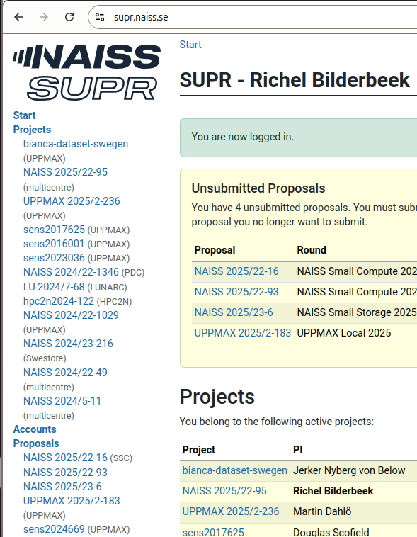
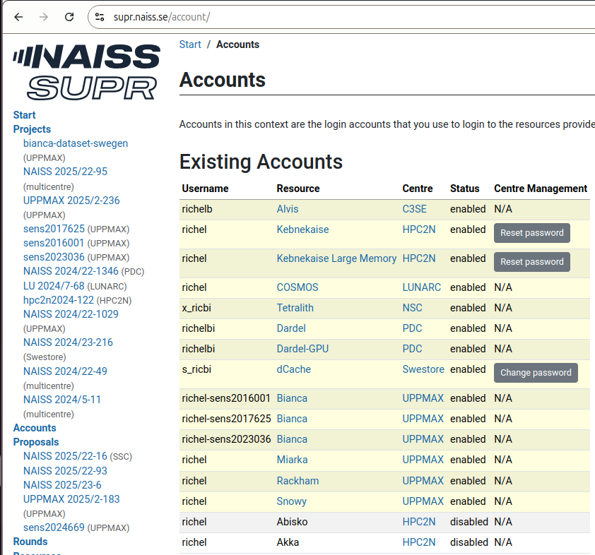

Frequently Asked Questions¶
When to follow the course¶
When should I follow this course?¶
When you want to get started with the UPPMAX clusters.
Especially at the start of learning any new skill, having help is very useful: some problems seem complex, yet have simple solutions. A teacher helps you get past those first problems.
When should I consider to not follow this course?¶
These are the reasons to consider to not follow this course:
Reason 1: you want to learn advanced things¶
When you are comfortably using UPPMAX and expect to learn new and more advanced things.
In this case, the course will go too slow for you.
However, you will probably be put to work by the teachers to help out other learners. If you like to test your own knowledge by teaching others, you will likely thrive in the course.
Reason 2: you have social anxiety¶
When you have social anxiety.
In this case, the course may be too social for you.
First, however, in this course, it is perfectly OK to give a wrong answer or to say 'I do not know'. This is what a former learner had to say on this:
As a learner, you do not want to be berated when giving an answer. Richel tries to gently deal with a wrong answer and he does this great
A learner from another course taught by Richèl source
Second, you are welcome to try and leave anytime you want. The course material is made for self-study too, with videos for all exercises. If needed, you can come in during the breaks to have your questions answered. Do fill in the evaluation when you leave early :-)
Prerequisites¶
What are the prerequisites for following this course?¶
See prerequisites.
Why are there so many prerequisites?¶
Because it takes many steps to be able to use UPPMAX, some of which takes days of waiting. Please contact us if you run into problems!
How do I know if I've registered?¶
Approximately two weeks before the course starts, you will receive a set of instructions for creating an account and joining the course project. When in doubt, contact the course coordinator
How do I know I have an account in SUPR?¶
If you can log in to https://supr.naiss.se/
How does that look like?
Here is how it looks like:

How do I know I have joined the course project?¶
If you see UPPMAX 2025/2-262 among your project at
https://supr.naiss.se/.
How does that look like?
Here we have a screenshot:

The one-but-last project is the course project, hence this user is in.
How do I know I have an UPPMAX account?¶
In SUPR, click on 'Accounts'.
You have an UPPMAX account if there is a row with resource 'Rackham' and centre 'UPPMAX'.
How does that look like?
Here we have a screenshot:

The three-but-last row shows that this user has an UPPMAX account
How do I know that touch /proj/introtouppmax/completed/$USER worked?¶
If this command gives no error message:
How can I check if I have a good Zoom setup?"¶
- You are in a room where you can talk
- You talk into a (standalone or headset) microphone
- Others can clearly hear you when you talk
- Others can see you
- You can hear others clearly when they talk
How can I get a good Zoom setup?"¶
- Find/schedule/book a room where you can talk
- Buy a simple headset
What if I don't have a good Zoom setup? Is that OK?"¶
No.
You will feel left out, as the course in highly interactive. It would be weird to the other learners.
Teaching¶
Why is the course learner-centered?¶
Because that is good teaching.
This course defines good teaching as 'evidence-based
methods to let learners acquire new skills and the monitoring
of this acquisition'. This means that it should be observed
that learners need more/less to time to practice and following
the schedule based on that. Learner-centered teaching has
an effect size from 0.36 [Hattie ranking]
or 0.64/0.70 [Cornelius-White, 2007][Hattie, 2012].
Or: it is useless to go faster than the learners can follow.
Lecturing is known to negatively affect learning [Hattie, 2023].
The teaching methods of this course follow the
evidence-based teaching cycle by [Bell, 2020a],
which allows learner-centered teaching.
Website¶
Why this new repository?¶
It uses the same content as https://github.com/UPPMAX/uppmax_intro, yet with ...
- the same layout as https://github.com/UPPMAX/UPPMAX-documentation
- more focus on re-using the content of https://github.com/UPPMAX/uppmax_intro possibly by merging wisdom from https://github.com/UPPMAX/uppmax_intro to the UPPMAX documentation
- more focus on exercises
This has been discussed with the main contributor of https://github.com/UPPMAX/uppmax_intro.
Other¶
What if I have another question?¶
You can contact us 
References¶
[Bell, 2020a]Bell, Mike. The fundamentals of teaching: A five-step model to put the research evidence into practice. Routledge, 2020.[Cornelius-White, 2007]Cornelius-White, Jeffrey. "Learner-centered teacher-student relationships are effective: A meta-analysis." Review of educational research 77.1 (2007): 113-143.[Hattie, 2012]Hattie, John. Visible learning for teachers: Maximizing impact on learning. Routledge, 2012. The effect size of student centered learning can be found on page 157, which references[Cornelius-White, 2007]where an an effect size of 0.64 or 0.7 was found One example open access study is[Knight & Wood, 2005].[Hattie, 2023]Hattie, John. Visible learning: The sequel: A synthesis of over 2,100 meta-analyses relating to achievement. Routledge, 2023. The effect size of lecturing can be found on page 363, which has an effect size of -0.26 with a robustness index of 4 out of 5 and is based on 3 meta analyses using 273 studies using 27,296 people, measuring for 614 effects with a standard error of 0.08. One example open access study is[Knight & Wood, 2005].[Hattie ranking]The Hattie Ranking[Knight & Wood, 2005]Knight, Jennifer K., and William B. Wood. "Teaching more by lecturing less." Cell biology education 4.4 (2005): 298-310. paper